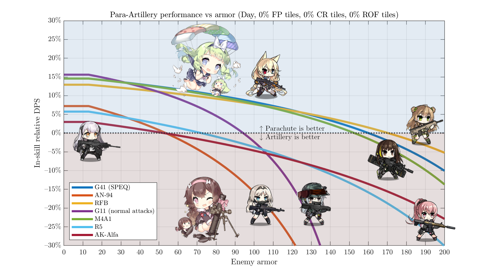
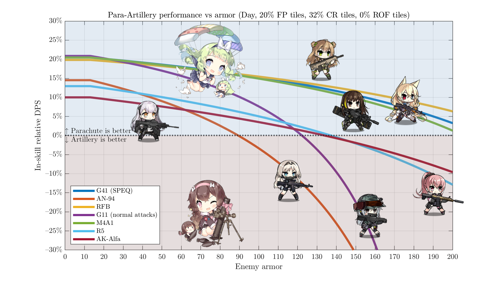
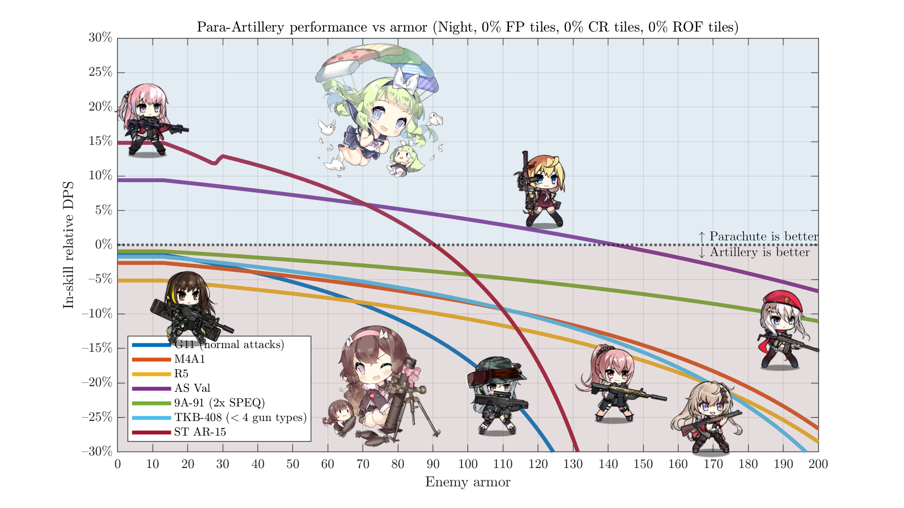
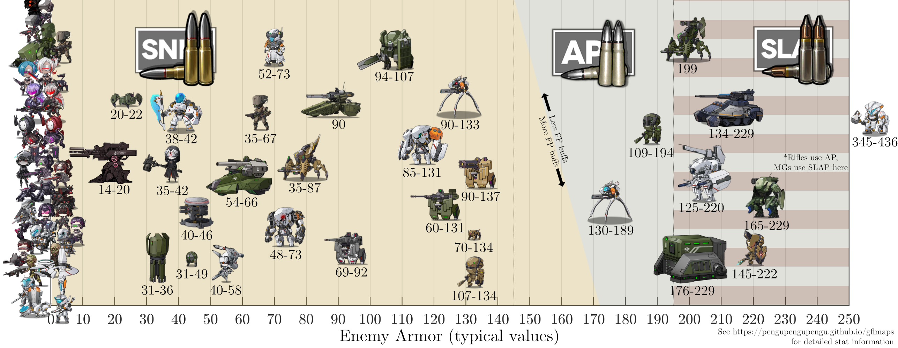

This is a rewrite of an old piece - see here for the original.
If you want a fairy that gives you lots of stats, and don't feel like paying fairy commands, Artillery and Command are obvious options. Parachute, too, if you've been doing your heavy equipment crafts properly.
Artillery is quite straightforward with its 55% FP boost, while Command/Para split it into 36% FP and 36/40% crit damage, respectively. These crit-oriented fairies have a clear advantage in RFHG echelons, given their high natural crit rate. But ARs, especially with the #2 processor chip, make things less one-sided. Crit multipliers go off of the post-armor damage, making them less valuable. Let's run the numbers and see what happens.
Day#

Sending out our ARs with nothing but a fairy & standard equipment, we can see two main categories. Run-of-the-mill ARs (FP selfbuffers with chips) prefer the straight FP from ~50-70 armor onwards, while those lucky enough to get SPEQs can stick it out until ~150 armor or so. Multihit ARs (AN-94, G11) fall down a bit faster than the rest.
However, it's rare for ARs to be completely on their own like that. Adding M4A1's tilebuffs:

Now, Artillery is only possibly worth considering past 130 armor - and for dolls with chip-replacement SPEQs, even Hydras are better fought with Para. Going even farther, here's the same chart but also adding in Grizzly's tiles/skill.
{kind=link}
Night#

Fun (i.e., VFLs) is banned at night for most dolls. Now, unless you have written permission to use one, it's Artillery all the way. Even semi-crit-oriented ARs like 9A-91 with SPEQs and TKB remain below the 0% line.
With M4A1 tiles: Para gets a marginal use case against low-armor enemies, but it's not a very significant change.
{kind=link}
Conclusion#
Command/Parachute fairies are better than Artillery for daytime AR DPS - even against reasonable armor levels. EOT+Chip setups remain overrated. If you're looking at some Minotaurus or Uhlan swarm and considering switching your fairy, switch your echelon instead to a more suitable archetype.
On the other hand, at night, Artillery should be your go-to. Command/Para is only worthwhile if using AS Val/STAR/Sopmod - or if you need to parachute somewhere, of course.
Other notes:
- If you don't have a parachute done yet, (a) get moving - 2.09 career quest rewards give you less of an excuse than ever!, and (b) here's some plots with Command instead.
- This doesn't consider active skills or other benefits fairies can offer (like acc/eva auras). It's very rare for your fairy selection to be purely between Command/Para/Artillery.
- ROF ARs aren't included here as they're generally not worth using and tend not to like chips anyways (making their numbers the same as before).
- Equipment loadouts are swapped from VFL/chip to EOT/chip as appropriate.
- Numbers here assume a 5-star fairy.
- To see how much armor a given enemy has, you can always check GFLMaps. For a general summary:
